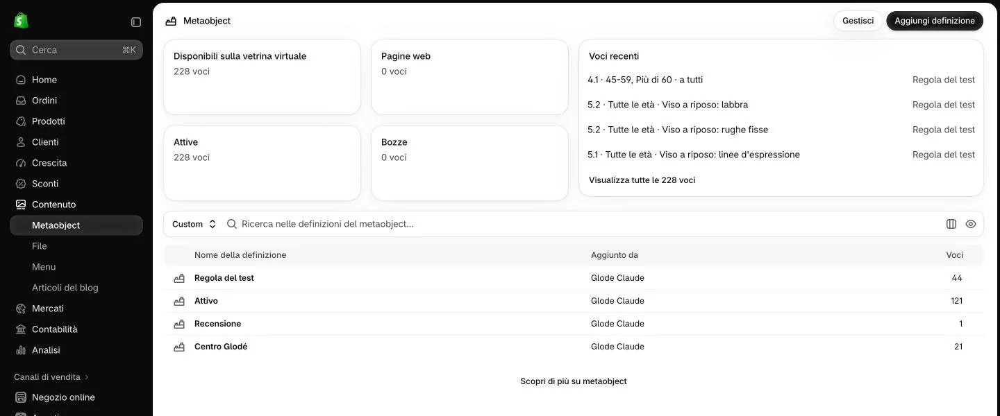
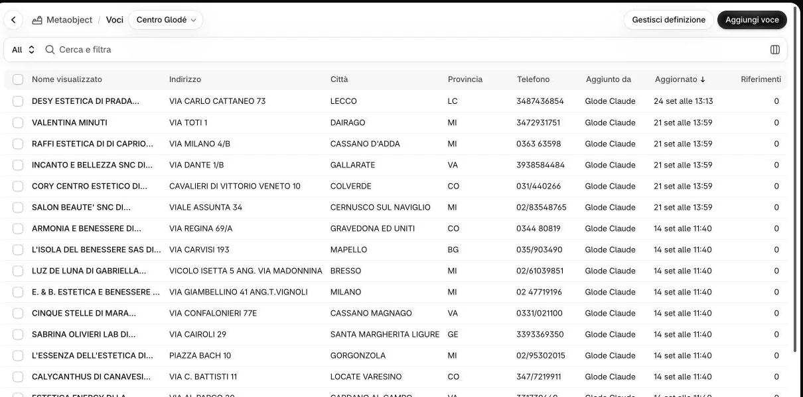
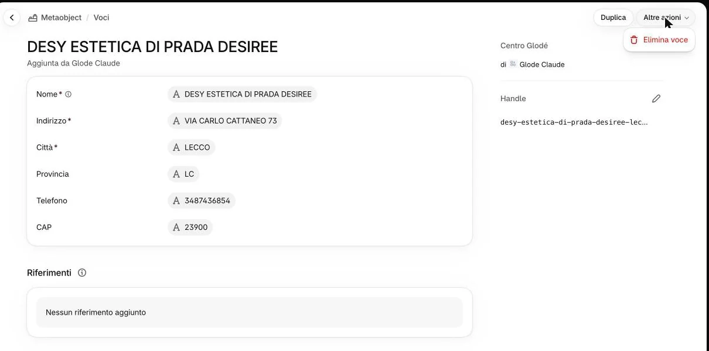
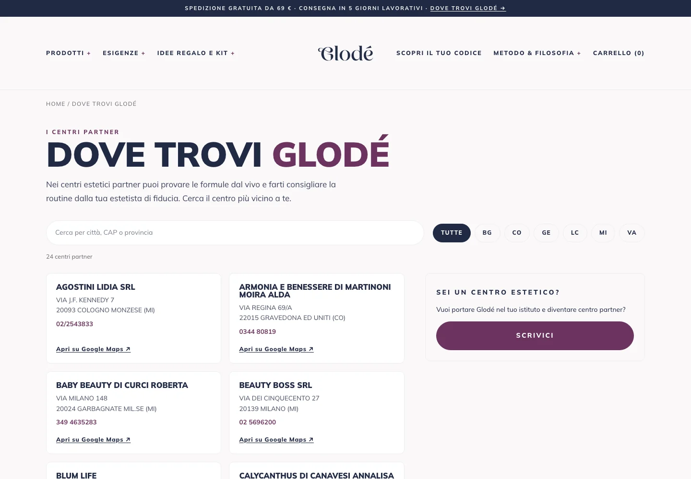
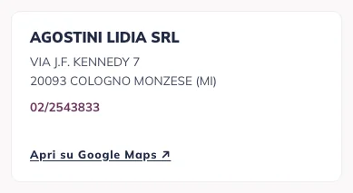

I centri della pagina «Dove trovi Glodé» sono voci del pannello: una per centro.
Cliccate «Contenuto», poi «Metaobject».

1
Aprite «Centro Glodé».
2Il numero accanto ai tipi è sbagliato
Il conteggio di Shopify a volte resta indietro (accanto a «Recensione» si legge 1, ma le voci sono molte di più). Contano le voci che vedete aprendo il tipo.
Per un centro nuovo cliccate «Aggiungi voce» in alto a destra.

3
Compilate «Nome», «Indirizzo», «Città», «Provincia», «Telefono» e «CAP», poi salvate.

4Cosa è obbligatorio?
Nome, Indirizzo e Città (hanno l’asterisco). Provincia (la sigla), CAP e Telefono si possono lasciare vuoti, ma servono: la provincia per i filtri della pagina, indirizzo e CAP per la mappa.
Scrivete i dati come ve li ha dati il centro. Una casella vuota, «—» o «n.d.» sul sito non compare. «Handle», a destra, lo scrive Shopify.
Per correggere un centro, apritelo dall’elenco, correggete e salvate.
5
Per togliere un centro, apritelo, cliccate «Altre azioni» e poi «Elimina voce»: non si recupera.
6Si può recuperare?
No: una voce eliminata non torna. Se il centro chiude solo per un periodo, scriveteci prima.
A ogni cambio scriveteci: serve al conteggio degli ordini per centro.

7Perché devo scrivervi?
Ogni ordine del sito viene attribuito al centro più vicino all’indirizzo di spedizione, per il conteggio mensile. Quell’elenco è una copia che aggiorna l’agenzia: sulla pagina il cambio si vede subito, nel conteggio no, finché non lo aggiorniamo noi. Vale anche per un CAP o un indirizzo corretto.

Sul sito
I centri compaiono in ordine alfabetico di nome, con i filtri per provincia. Il telefono si tocca per chiamare; «Apri su Google Maps» usa indirizzo, CAP, città e provincia: scriveteli bene, o la mappa porta altrove.